想找人陪同带队，把这趟旅行稳稳走好
可以从人数、年龄、预算、出发城市、想看的内容和不能接受的强度开始。我会先判断这趟是否适合陪同带队，再细化路线、酒店、交通、餐食、每日节奏和现场执行方式。
很多人不是不能自由行，而是不想把宝贵假期花在查车、排队、问路、临场改计划上。我的工作，是把行前规划和现场执行连在一起，让大家走得稳、玩得明白、遇到情况有人处理。
我会先把路线、酒店、交通、餐食和体力节奏提前拆清楚；出发后，再负责集合、转场、入住、购票、问路、餐厅沟通和临时调整。客人需要做的，是放心跟着走，保留更多精力去看、去吃、去感受。
尤其是带中老年朋友出门，真正重要的不是景点越多越好，而是每天有清楚重点，车站换乘少一点，休息点安排早一点，遇到语言和突发状况时有人在现场处理。
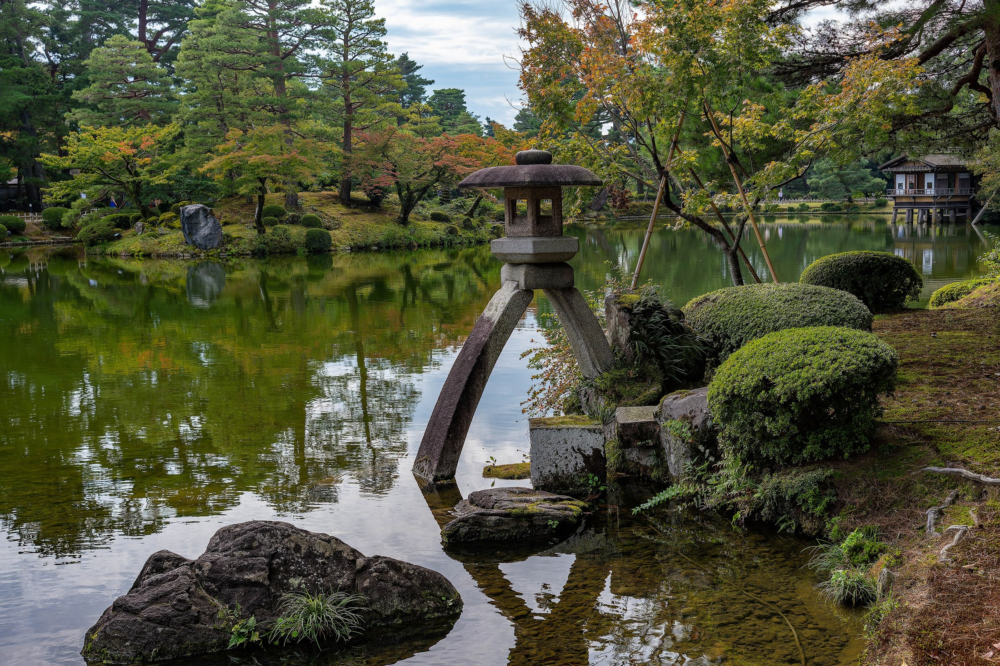
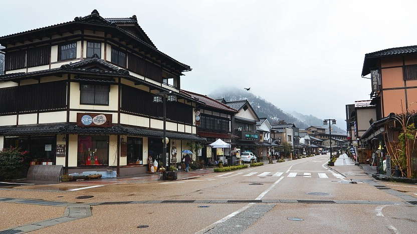
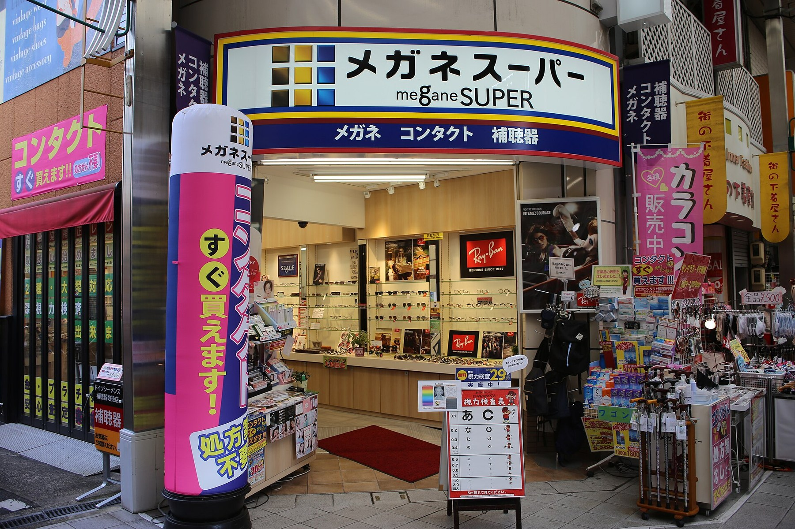
路线不是产品清单，而是我适合带大家实际走起来的旅行样本。每条线都会先想清楚：从哪里进入状态，哪一天放慢，哪里安排温泉恢复，哪一段做成真正记得住的体验。
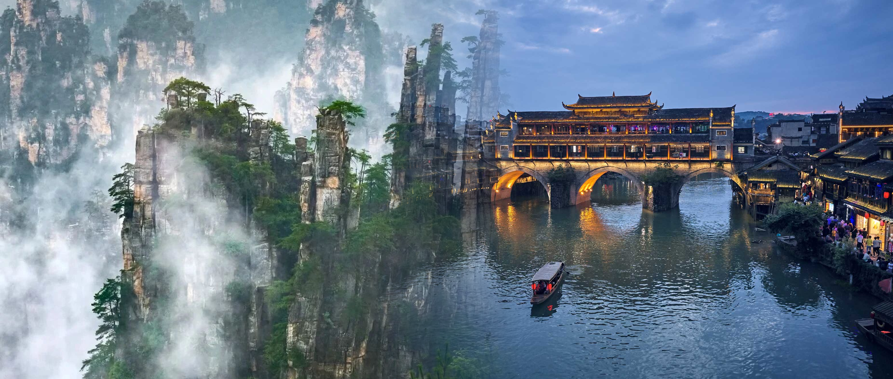
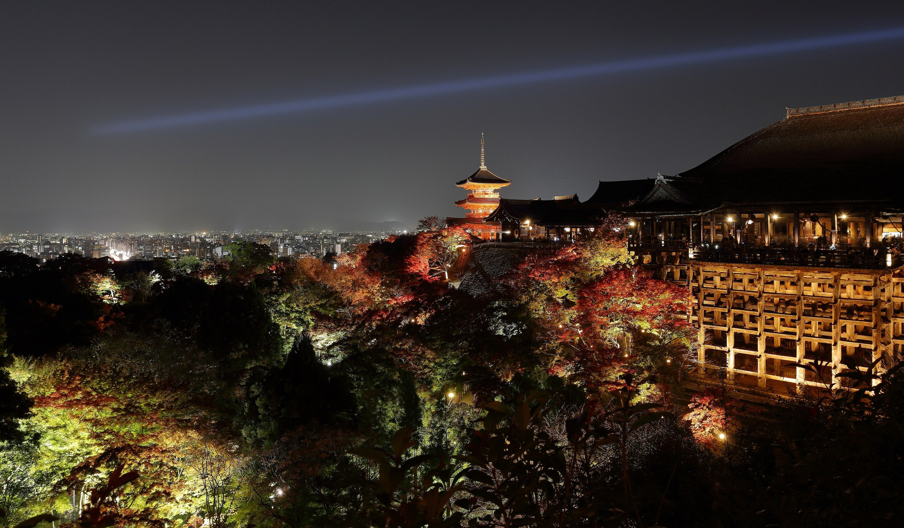
这趟线路适合第一次认真看日本的小团。重点不是多，而是每天有清楚理由：什么时候早起，什么时候回酒店休息，什么时候泡汤，什么时候只看一场夕阳。
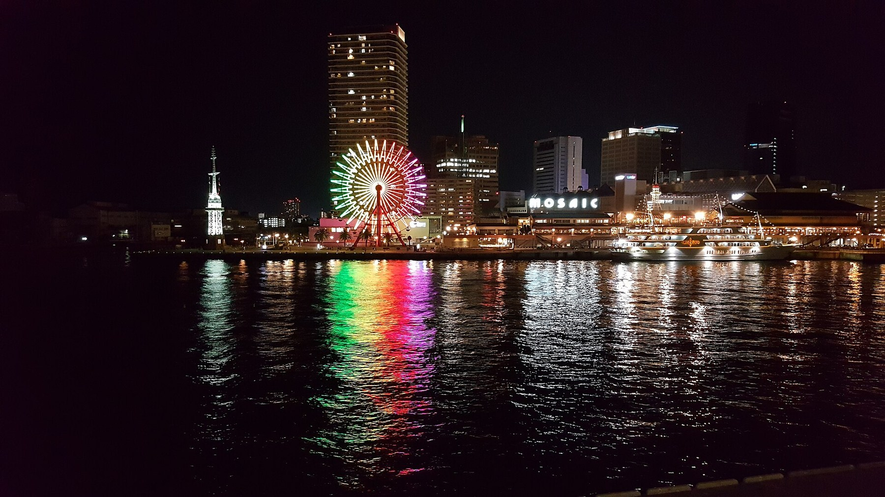
这条线适合想要特别记忆点的小团。核心不是赶到九州，而是把转场做成体验：从神户乘夜船穿过濑户内海，清晨抵达新门司，再从门司港、下关和关门海峡进入九州。

这条线把韩国做得更有体验感：从济州的火山海岸、海女文化、黑猪鲍鱼开始，到庆州住进韩屋古都，最后在首尔从景福宫、西村、广藏市场走到 The Hyundai Seoul 和汉江边。
以中部北陆 9 天为例，真正需要控好的不是景点数量，而是“哪天早起、哪天转场、哪天泡汤、哪天只轻松收尾”。
路线告诉人如何抵达，文章记录抵达之后真正发生的事。这里有城市的背面、古道上的偶遇，也有一趟需要五套预案的山间转场。
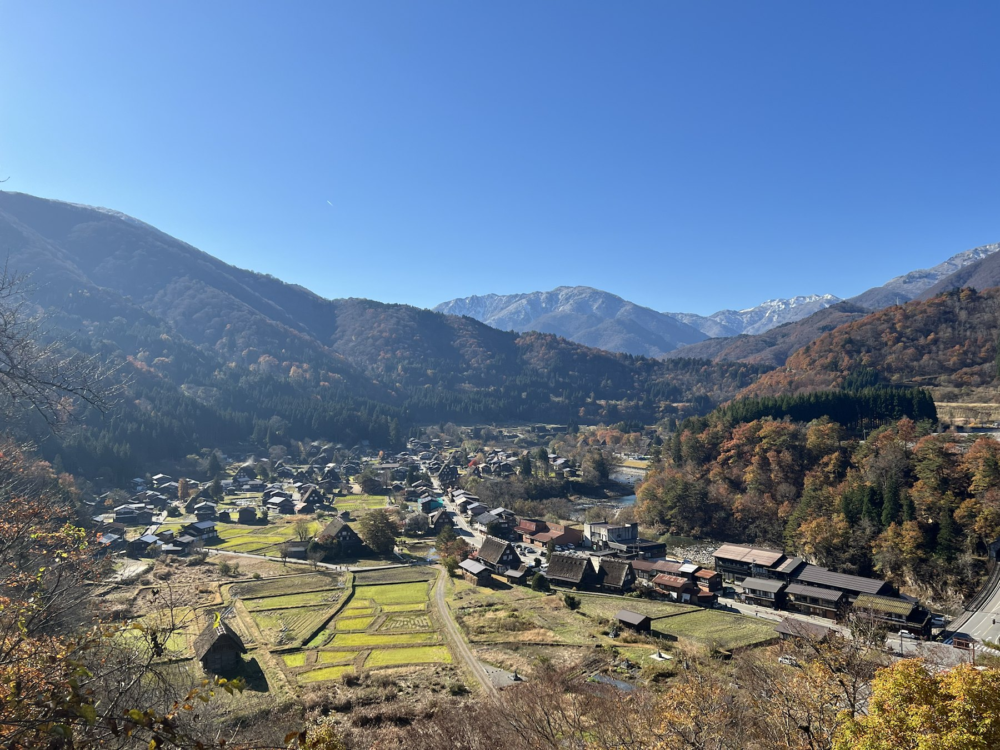
隧道后的彩虹、深夜的木屐声，以及合掌屋屋顶下仍在继续的生活。
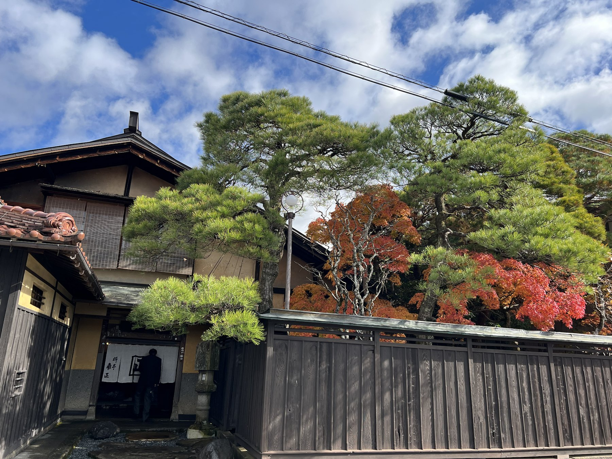
空无一人的夜路、座无虚席的居酒屋，以及落叶山路上的生与死。
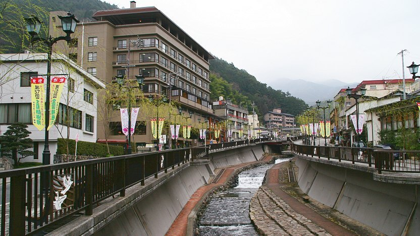
五套交通预案与六分钟换乘，最后还需要一位司机没有关上的车门。
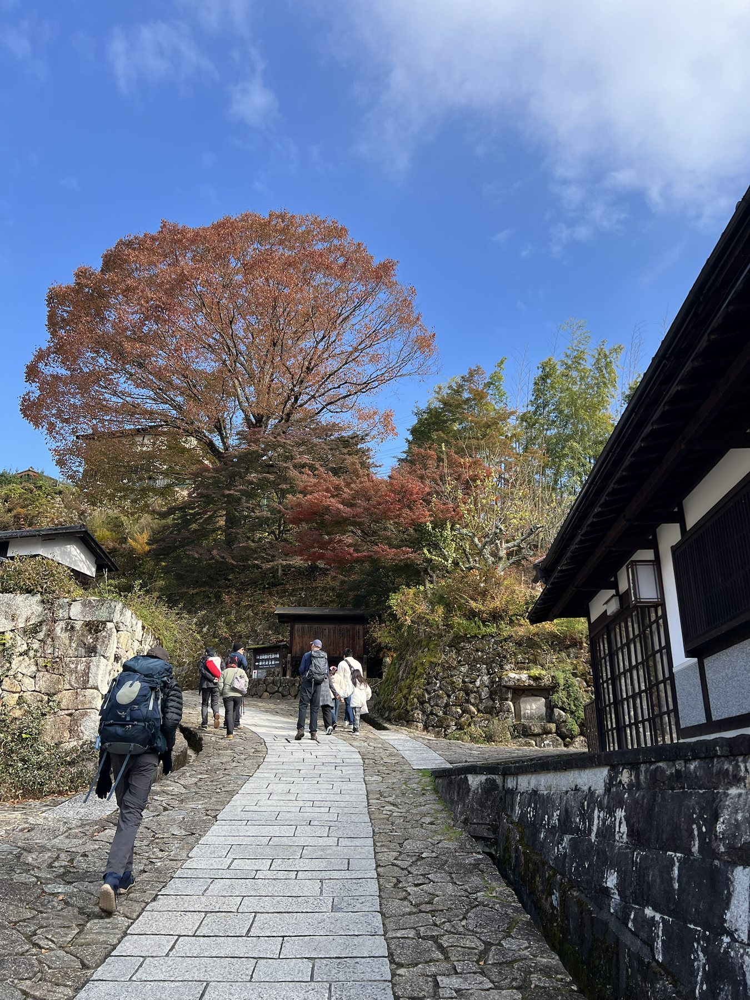
一杯山中热茶、一只粉笔兔子和老人认真写下的名字。
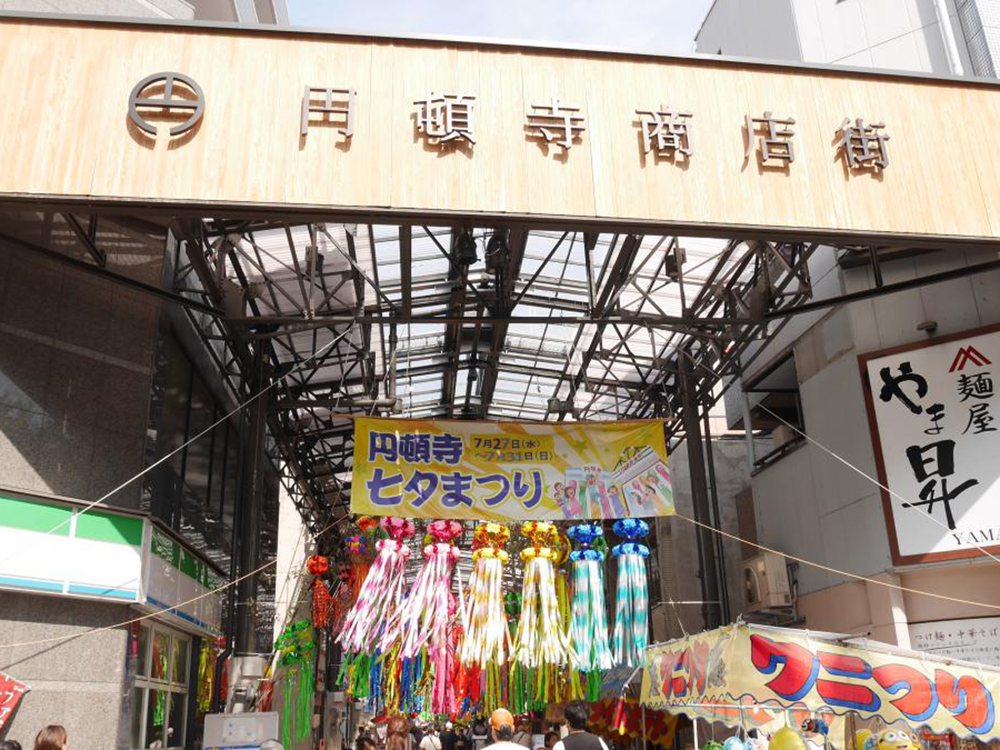
夜里的垃圾、二手店与雨中涉水的人，让一座城市变得立体。
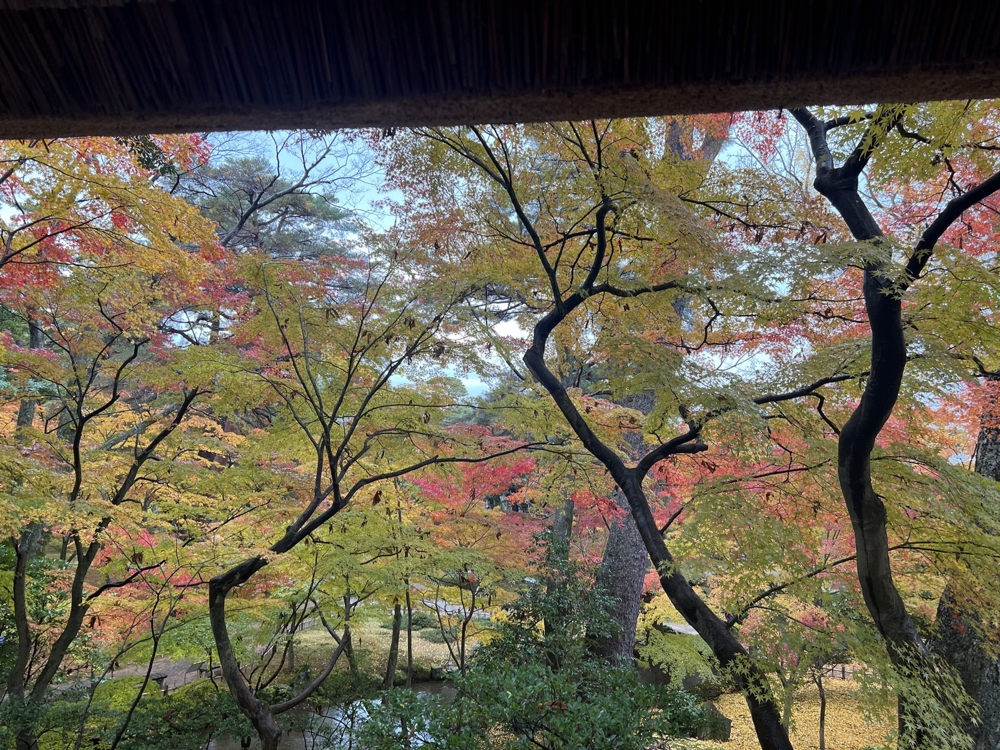
丢失的行李、海边的夕阳，以及兼六园的一把伞和一本登记册。
我希望旅行不是临时拼凑的打卡表，而是一段被认真设计过、有人现场带着走、同行人回想起来有画面的经历。
你好，我是“陪您看世界”的带队者。厦门大学毕业后，我在互联网行业工作了 10 年以上，长期做信息整理、体验判断和需求拆解，也把这种习惯带进旅行：路线是否顺，酒店位置是否合理，交通衔接是否轻松，餐食是否匹配当天体力，预算有没有更优解，我都会提前想清楚。
我喜欢旅行，但不太喜欢人山人海式的打卡。相比“去了多少景点”，我更在意一次旅行能不能留下几个独特的记忆点：清晨人少时的一条老街，一家顺路又舒服的小店，一段不赶路的海边傍晚，一晚刚好安排在疲惫节点的温泉。
我去过日本、韩国、泰国、柬埔寨、新西兰等地，国家不算特别多，但我喜欢反复去、慢慢看。每次再去同一个地方，都会发现新的街区、新的饮食、新的历史细节，也更能理解当地文化真正有意思的地方。
我掌握英语和日语，对外沟通没有明显障碍。每年也会想办法抽时间陪爸妈旅行，所以很理解带长辈出门真正需要的不是把行程排满，而是让他们走得舒服、吃得安心、玩得明白。
我爱看书，尤其喜欢在出发前读和目的地相关的书。历史、文学、美学、饮食、城市故事，都会让一个地方从“景点”变成“可以理解的生活现场”。我也喜欢分享，会把这些有趣的信息，用同行人听得懂、也愿意听的方式讲出来。
可以从人数、年龄、预算、出发城市、想看的内容和不能接受的强度开始。我会先判断这趟是否适合陪同带队，再细化路线、酒店、交通、餐食、每日节奏和现场执行方式。
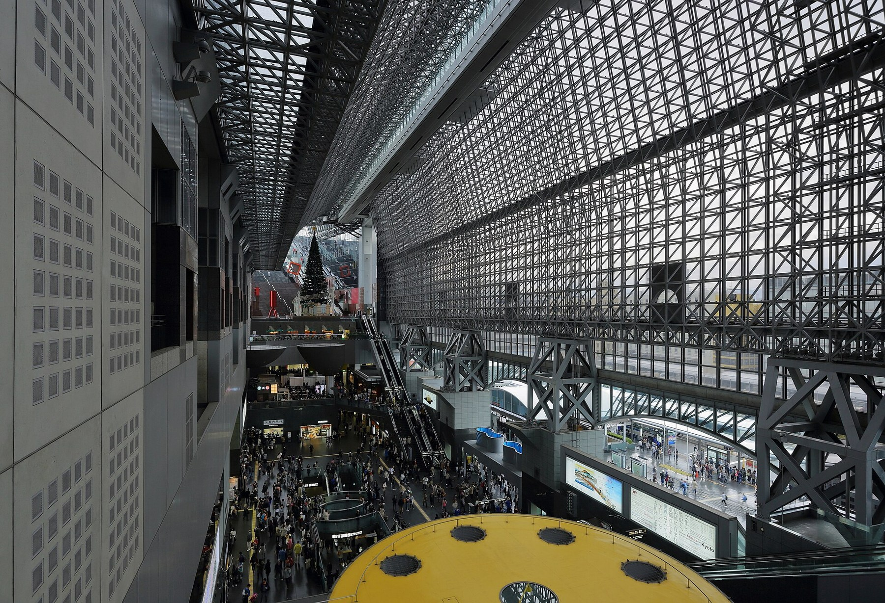